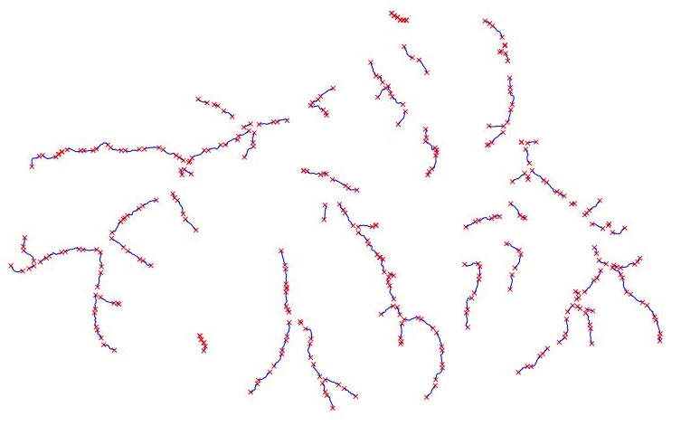

r.green.hydro.structure computes the channels and the penstock between each intake and restitution. The input has to be a vector map with the intakes and restitution of the potential plants as the one computed by r.green.hydro.optimal.
NOTES
The structure of the plant is composed of a channel and a penstock. The channel conveys the water from the intake to the pentock along a very small slope and the penstock conveys the water to the turbine with the highest possible head. Indeed, the power is maximized for the highest head (the discharge is the same in the river and in the structure). Thus, the channel is computed along the same quote - even if in reality a slope is necessary, it's so small that it's neglected - until the point which maximizes the head of the pentock until the turbine. The structure is computed for both sides of the river in order to determine which one produces more power.
EXAMPLE
These examples are based on the Pnam file which refers to the Gesso and Vermenagna Valley in Piedmont, Italy.
Here is the input vector file potentialplants with the intakes and restitution (in red) computed by r.green.hydro.optimal. The vector map with the segments of river is also visibile in blue on this picture.

Potential intakes and restitution
The following command computes the channel and the pentock for each potential segment of river and for each side of the river from the input file potentialplants :